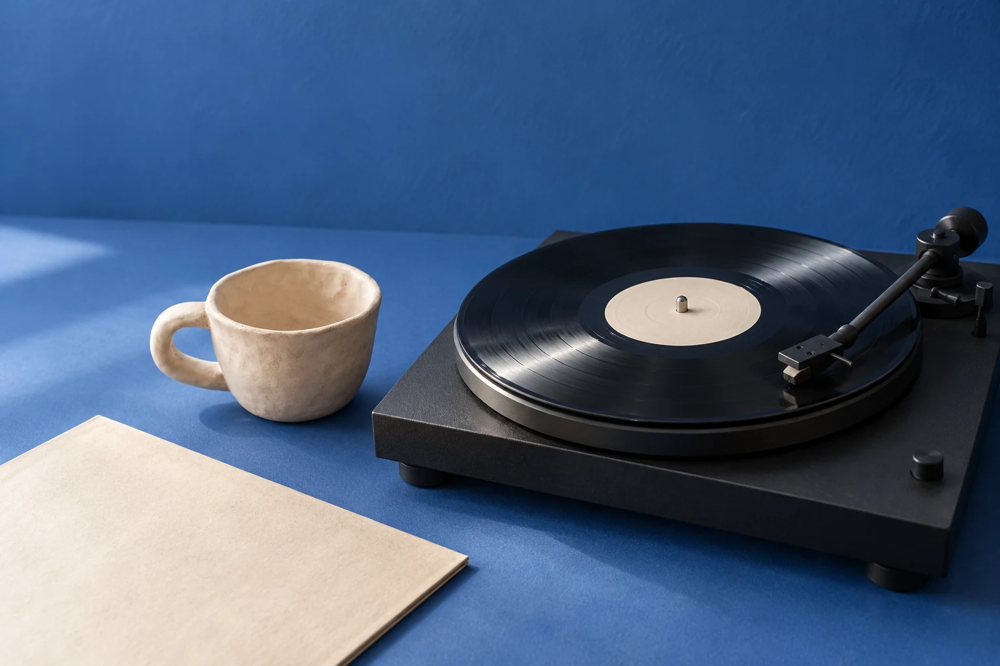

01 / 음악 읽기
다시 듣고 싶은 한 곡
곡 이름과 돌아갈 구간, 그날의 한 장면.
세 줄로 시작하는 듣기 노트.

이번 호의 주제
이번 호의 목차
읽기와 짧은 기록
01 / 음악 읽기
곡 이름과 돌아갈 구간, 그날의 한 장면.
세 줄로 시작하는 듣기 노트.
02 / 손작업, 짧은 기록
작업대의 작은 시편과 메모.
표면과 색을 다음 작업의 단서로 남깁니다.
인물은 한국인 설정으로 제작한 AI 가상 인물이며 실제 브랜드 참여자나 활동 사례가 아닙니다.
협업 문의
음악을 함께 듣는 모임이나 작업대의 물건, 사진과 글로 소개하고 싶은 장면이 있다면 이야기해 주세요. 주제와 형식, 생각하는 시점을 함께 살펴봅니다.
실제 문의 전송 없이 준비 항목을 보여주는 시연입니다.